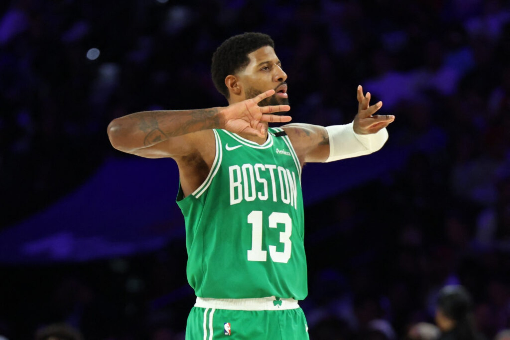

The question: Is Boston's early-season surge a genuine championship signal, or a hot stretch that still needs a larger sample? The Celtics have earned a serious reassessment — not an automatic coronation.

4DK FILM ROOM · Paul George and Boston’s evolving contender case
01 · The defensive argument
Boston's case starts with its ability to dictate possessions without needing a perfect shooting night. Against Milwaukee on November 8, the Celtics held the Bucks to 97 points in a 117–97 win. That matters more than a flashy highlight: sustainable contenders need a defensive identity they can take on the road.
02 · The Philadelphia statement
Boston followed with a 123–101 victory over Philadelphia on November 10. The margin was emphatic, but the more important story is the challenge it presents to the preseason hierarchy. Boston has to be judged on what it is showing now, not simply where it was projected before opening night.
03 · The Tatum–Brown storyline
The visible tension around the former teammates has become part of the conversation. We can analyze the public interactions and the basketball stakes without pretending to know their private relationship. The court supplied the definitive result; personal motives remain unverified.
04 · What still needs proving
Can the Celtics maintain the defensive standard against multiple styles? Can their supporting cast sustain offensive creation when opponents load up on the primary options? How does the rotation hold up over back-to-backs and a longer injury cycle? Those are the questions that determine whether Boston belongs in the top tier of Eastern Conference contenders.
05 · The 4DK team leaders board
2026–27 REGULAR SEASON · THROUGH NOVEMBER 10 · 11 TEAM GAMES
TEAM RECORD9–2First 11 games
SCORING LEADERJayson Tatum26.5 PPG · 10 games
ASSISTS LEADERJayson Tatum7.4 APG · 10 games
SECOND SCORERPaul George22.0 PPG · 10 games
STEALS SPOTLIGHTPaul George2.1 SPG · 10 games
TEAM DEFENSE104.0Opponent PPG · 2nd NBA
OFFENSIVE RATING120.43rd NBA
NET RATING+12.21st NBA
Snapshot figures, not live updating. Tatum and George have played 10 of Boston's first 11 games. Source checks: Boston 2026–27 roster and team statistics and NBA team stats. Other individual categories will be added after independent leader verification rather than guessed.
06 · Jayson Tatum: from elite scorer to offensive quarterback
The clearest evolution in Tatum's game is not simply that he can pass. It is how often Boston can ask him to make the first important decision of a possession. With Brown gone, Tatum is no longer one half of a two-wing scoring partnership. He is the player who can organize the spacing, choose the matchup and dictate whether Boston attacks immediately or forces the defense to rotate first.
His 7.4 assists per game through 10 appearances reflect a larger playmaking responsibility, but the raw number tells only part of the story. Watch him bring the ball up against a set defense, survey a high screen, and make the defense choose between protecting the lane and staying attached to George or the weak-side shooters. When the help defender steps toward Tatum, the pass is not an escape hatch; it is the purpose of the action.
There is a crucial distinction between a forward who occasionally finds the open man and a true point forward. The latter has to read the second defender, recognize when the first option is unavailable and create an advantage for the next teammate. Boston's offense becomes harder to load up against when Tatum alternates scoring pressure with that orchestration. The challenge is keeping those decisions sharp late in games, especially when the defense switches and refuses to give him an easy first read.
His scoring remains the foundation: 26.5 points a night while taking on more playmaking work. That dual burden is why the next step in his development matters. Boston does not need Tatum to abandon his isolation package; it needs him to decide when to use it and when a pass can create an even better shot. The Film Room will track assist-to-turnover balance, potential assists, paint touches and fourth-quarter creation as the sample grows.
07 · Paul George: a 20-point scorer who changes the geometry
Boston did not acquire a like-for-like Jaylen Brown replacement. George brings a different offensive rhythm: spot-up range, movement into space, secondary ballhandling and a veteran's feel for when to punish an overcommitted defense. Through 10 appearances he is scoring 22.0 points per game, shooting 44.0 percent from three and averaging 2.1 steals. That is more than a complementary scorer's production.
The 36-point eruption against Philadelphia was the clearest example of the upside. George could attack a defense already occupied by Tatum, but he could also become the first option for an entire stretch. Boston's 22 made threes in that game demonstrated how dangerous its spacing can be when both forwards demand attention. The more important question is whether the offense remains connected when George is not hitting six threes.
The health question is central. George played 10 of Boston's first 11 games; that's an encouraging early participation mark, not proof that an injury history has disappeared. Boston's staff must manage the cumulative load across back-to-backs, monitor availability and resist treating a strong November as a guarantee for April. The real value of a 20-plus-point George is having him available to give Tatum relief when the season gets heavier.
Defensively, George's length and anticipation can disrupt passing lanes without requiring Boston to gamble on every possession. His 2.1 steals per game are a useful signal, but the Film Room should also evaluate whether the Celtics keep their shell intact behind those plays.
08 · Life after Jaylen Brown: replacing a star by committee
Brown's departure to Philadelphia ended one of the defining partnerships of Boston's modern era. The Celtics received George and four future draft picks, but the immediate basketball calculation was more complicated than swapping one All-Star wing for another. Brown supplied downhill pressure, self-created scoring and the ability to defend demanding assignments. No single replacement automatically reproduces that combination.
Instead, Boston is spreading the work. Derrick White remains a connective two-way guard: he can defend the point of attack, move the ball quickly and attack a rotating defense without needing to dominate possession. Payton Pritchard adds pull-up shooting, pace and the ability to punish opponents who overplay the stars; his consecutive threes helped ignite the fourth-quarter separation in Philadelphia. Sam Hauser stretches help defenders away from the paint, while the development of Jordan Walsh, Baylor Scheierman and Hugo Gonzalez matters to the long-term depth picture.
Inside, Neemias Queta offers rim finishing, offensive rebounding and a vertical defensive presence. Mitchell Robinson adds another size-and-rebounding option when available, allowing Boston to adjust to physical matchups. The Celtics' roster is not without questions: spacing can tighten with certain big combinations, young wings will be tested in meaningful minutes, and the second unit cannot depend on one player getting hot every night.
That is what makes the 9–2 start interesting. Boston's early success is not evidence that Brown was unimportant. It is evidence that a well-drilled system can redistribute touches and responsibilities without losing its identity. The bigger tests are against opponents who force Tatum to surrender the ball, attack George defensively and make Boston's role players finish possessions under pressure.
09 · The next ranking tests
Boston is 9–2 through November 10. The next scheduled games are Dallas on November 15 and Orlando on November 16, followed by a trip to Denver on November 18. The Nov 15–16 back-to-back will matter for the next Power 30; Denver provides a test for the following cycle. Times and availability should be rechecked against the NBA schedule before tipoff.
SUN · NOV 15 · VS DALLAS
THE HALF-COURT EXAM.
Track how Boston handles ball screens, recovers to shooters and creates shots when its initial action is disrupted. The most revealing possessions may come late in the clock: can Tatum direct a second action, or does Boston settle for a contested jumper?
Ranking indicator: Quality of half-court possessions, not just raw points.
MON · NOV 16 · VS ORLANDO
THE PHYSICALITY CHECK.
On the second night of a back-to-back, watch defensive rebounding, turnovers against pressure and how much offensive responsibility the reserves can absorb. Can Boston play through contact without surrendering transition opportunities?
Ranking indicator: Bench stability and defensive consistency on short rest.
NEXT CYCLE · WED · NOV 18 · AT DENVER
THE WESTERN BENCHMARK.
Boston's interior coverage and off-ball discipline face a different test in Denver. The key is whether the Celtics can protect the paint without leaving clean catch-and-shoot opportunities, while creating enough paint touches of their own.
Ranking indicator: A later-cycle measuring stick; no result assumed.
Point-of-attack containment: Boston’s perimeter defenders must make opposing ballhandlers work without constantly drawing a second defender out of position. The test is whether closeouts and weak-side rotations remain connected when the first action is stopped.
Offense when the threes stop falling: The Celtics hit 22 threes in Philadelphia. That is a weapon, but the film-room question is what happens when opponents run shooters off the line. Watch for decisive paint touches, cuts behind aggressive closeouts and secondary creation rather than stagnant isolation.
Rotation endurance: Two back-to-back sets in a short stretch will tell us whether the bench can sustain the defensive standard and whether Boston can avoid relying on one dominant scoring night. The next rankings should reward repeatable habits, not assume every game will look like the Sixers win.
THE 4DK VERDICT.
Boston deserves to be taken seriously as a potential top-three East seed. The early 9–2 record, elite net rating and two-way structure support a genuine contender argument. Tatum’s point-forward responsibilities and George’s 22-point scoring provide a new foundation; White, Pritchard and the supporting cast make the arrangement viable. The unanswered questions are health, frontcourt matchups and whether the offense can manufacture quality looks when opponents take away the three. A championship label in November is premature, but dismissing Boston because Brown is gone would ignore what this group has actually shown.